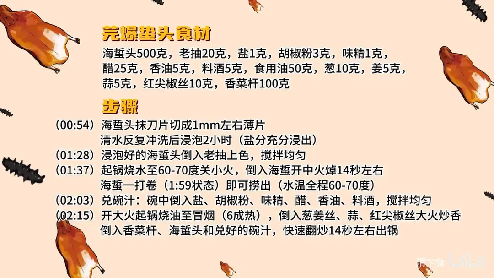

芫爆蛰头
隋卞一做。500g 海蜇头抹刀片成 1mm 薄片，反复冲洗后泡 2 小时去盐，抹 20g 老抽上色；60-70 度水温焯 14 秒，一卷即捞。葱姜蒜、红尖椒丝配香菜杆，兑好碗汁大火快炒 14 秒出锅。
原视频：https://www.bilibili.com/video/BV1Fa4y1z7kG
食材
海蛰头、香菜杆 等 14 样
| 类别 | 用料 | 用量 |
|---|---|---|
| 主料 | 海蛰头 | 500g |
| 主料 | 香菜杆 | 100g |
| 配料 | 葱 | 10g |
| 配料 | 姜 | 5g |
| 配料 | 蒜 | 5g |
| 配料 | 红尖椒丝 | 10g |
| 调料 | 老抽 | 20g |
| 调料 | 盐 | 1g |
| 调料 | 胡椒粉 | 3g |
| 调料 | 味精 | 1g |
| 调料 | 醋 | 25g |
| 调料 | 香油 | 5g |
| 调料 | 料酒 | 5g |
| 调料 | 食用油 | 50g |
步骤
- 片蛰头：海蛰头抹刀片，切成 1mm 左右薄片。
- 泡洗：清水反复冲洗，再浸泡 2 小时，让盐分充分浸出。
- 上色：浸泡好的海蛰头倒入老抽，搅拌上色均匀。
- 焯水：起锅烧水至 60-70 度，关小火倒入海蛰，开中火焯 14 秒左右；海蛰一打卷即可捞出，全程水温保持 60-70 度。
- 兑碗汁：碗中倒入盐、胡椒粉、味精、醋、香油、料酒，搅拌均匀。
- 爆炒：开大火起锅烧油至冒烟（六成热），倒入葱姜丝、蒜、红尖椒丝大火炒香；倒入香菜杆、海蛰头和兑好的碗汁，快速翻炒 14 秒左右出锅。
讲解要点
难度：★★★★☆（刀工不难，难在焯水温度和海蜇下锅后十几秒的火候）
为什么这么做
- 海蜇头片到 1mm 左右：片薄才能一打卷就熟透、又吸得住味，厚了外面老了里面还是生的。
- 反复冲洗再泡 2 小时：海蜇头腌渍时吃足了盐，盐分不漂出去，成菜只有死咸，鲜味也出不来。
- 先放老抽上色：海蜇本身灰白，焯完更白，颜色只能提前抹上去，成菜才有红亮的卖相。
- 60-70 度下锅、一打卷就捞：海蜇一遇高温就急剧收缩出水，水一开就烫老，保持不滚的温度只让它定个型。
- 先兑碗汁再动火：旺火爆炒只有十几秒，调料必须提前化开，边炒边放根本来不及。
- 油烧到六成、刚要冒烟就下葱姜蒜：锅气足料才瞬间出香，油温不够就成了「煮」，海蜇一出水就完。
- 香菜杆和海蜇最后同下、十几秒出锅：两样都是脆料，多炒十秒就出水塌软。
容易翻车
- 海蜇没泡透，盐分没漂净，成菜咸得发苦。
- 水烧开了才下海蜇，或者焯的时间一长，蜇头缩成一小团、咬不动。
- 锅不够热、油不够多，海蜇一下锅就出水，炒成一碗汤。
- 碗汁没提前兑好，等调料放齐，海蜇已经老了。
- 香菜杆下得太早，跟海蜇一起炒到软塌，脆口感全丢。
热评补充
- 海蜇头按过矾次数不同，软硬差别很大：过矾越多越韧、缩水也越多，喜欢脆口就挑过矾少的，买时用手轻捏能感觉出来。
- 新海蜇偏红，存放越久颜色越淡；有商家用酱油泡海蜇冒充老货，看泡海蜇的水色就行，水清或微红才是本色。
原片尾卡

原片文案
AI 字幕校准稿
芫爆蜇头这个菜，你们还有印象吗？你们只知道油爆双脆，其实芫爆蜇头的技术含量不低于油爆双脆。蜇头本身含水多，你要把它炒热，还要保持它脆嫩的口感，还得炒入味、少出水，火候特别难打。
这个菜做得真的非常非常好，蜇头的火候一到位，那叫一个脆，嚼着很香，胡椒粉的香、调料的香，在炒菜当中体现得淋漓尽致。这个菜我们从探店到现在第一次见，好多店都不做。当时就说了，这是跟油爆双脆齐名的一道菜，特别考验厨师的功底。
选的是海蜇头，就这种没有片过的。先把它片成片，每一刀片完再往前带一下，厚度大约一毫米厚就行。
片好之后泡水，市场上买的海蜇头基本都是腌过的，不放盐搁不住，所以片完一定得多泡一会儿，小水流冲着，把盐味漂出去。这个是我们事先片好、漂过水的，放点老抽给它加个颜色，这样它就上色了。
锅里边烧上干净水，温度六七十度就行，不用让它开锅，然后关小火，把蜇头倒进去，再开火，稍微一打卷就捞。
这是一个旺火爆炒的菜，所以要先兑一个碗汁：盐、胡椒粉、味精、醋、香油、料酒，搅拌一下。然后开大火，油烧到六成、刚要冒烟，把葱姜蒜倒进去，接着下海蜇头，倒入兑好的碗汁，快速翻炒，十几秒就出锅。
真脆啊，不光是海蜇的脆，里面配的原材料都是脆的，口感吃着复合。咸鲜、胡椒粉的味道，还有点很淡的醋酸味；海蜇吃进去是干爽的。
这个火候是不是特别重要？很重要。你也不能让它把水分全渗出来，也不能渗得太干净，爆炒就十几秒的事。